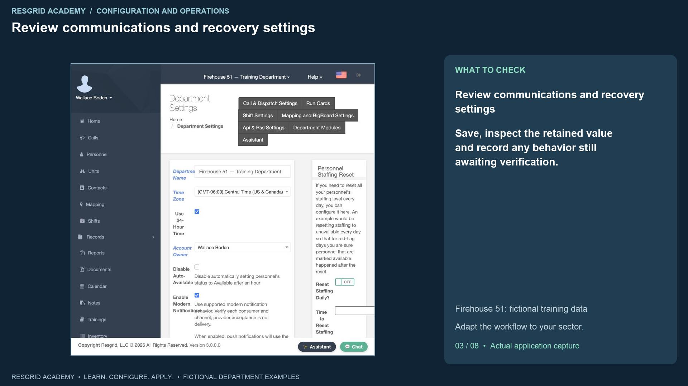
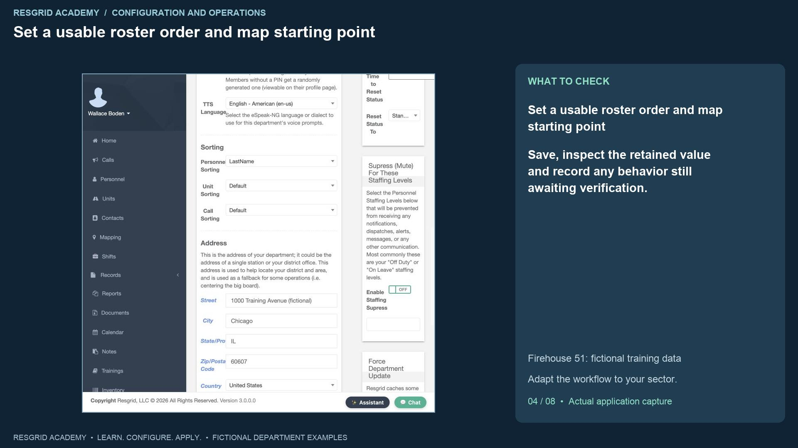
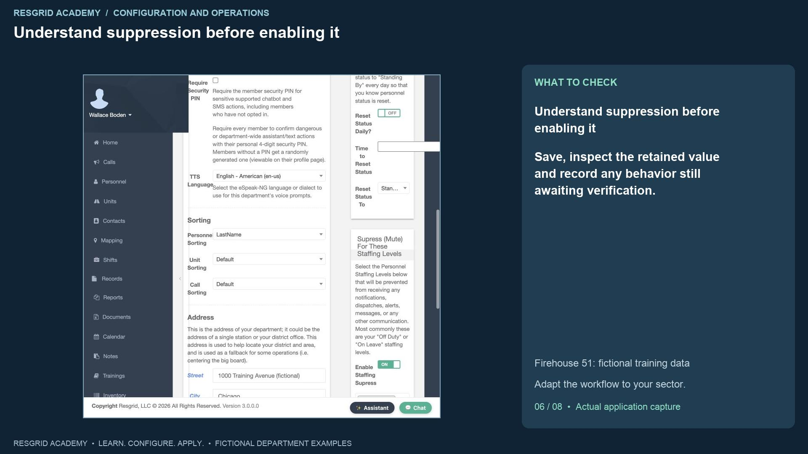
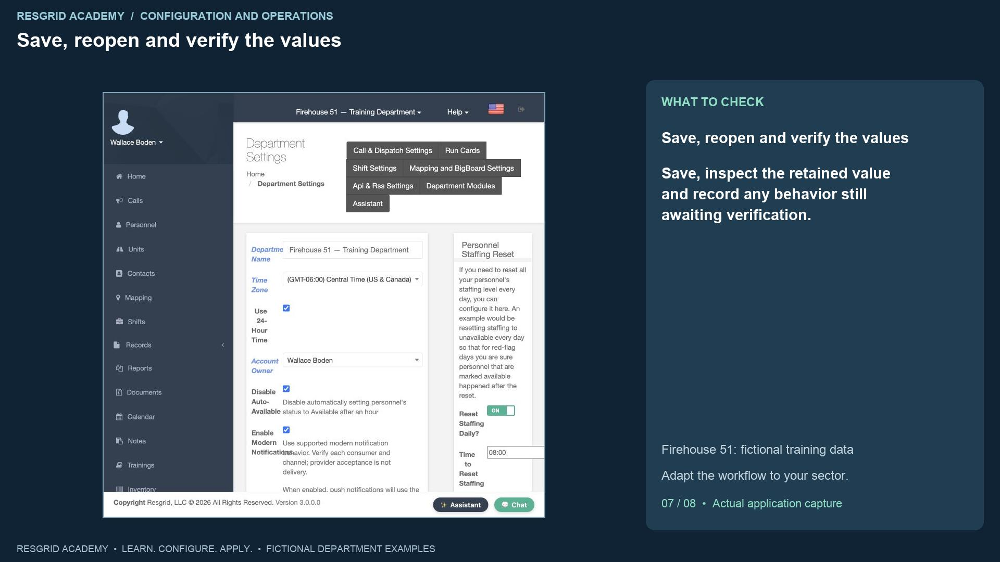

Configuration walkthrough
Configure department-wide behavior
Follow each step, understand its impact, and try the practice exercise with your department.
Step 1
Choose department behavior deliberately
Read the transcript
Department settings change how a whole department sees and handles its work. They deserve the same review as a dispatch procedure. Open the department menu, then Department Settings. We are using the fictional Firehouse fifty-one department, but these controls are equally relevant to a mobile crisis service, a search team, a patrol company, a wildland contractor, or a plant response team. Begin by identifying the problem you want to solve. Is the roster showing stale availability? Are off-duty members receiving unwanted alerts? Is a module confusing members who do not use it? Make one deliberate change, save it, and check its effect before changing several related controls.
Step 2
Time, ownership and automatic availability
Read the transcript
The department name identifies this workspace. The time zone affects local time displays and scheduled work; our training department uses Central Time. Use twenty-four-hour time changes how supported screens display the clock. It does not create twenty-four-hour staffing coverage. Account Owner identifies the managing account; review ownership and administrative access in the personnel and security workflows. Disable Auto-Available controls the automatic behavior described on this screen: setting personnel status to Available after an hour. In this lesson we turn that automatic behavior off. This avoids treating the passage of time as evidence that a person has finished a long assignment. It also makes deliberate member updates and supervisor follow-up more important. Saving the setting is separate from proving the worker’s behavior over time; this recording verifies the saved configuration, not a one-hour background-worker test.
Step 3
Review communications and recovery settings

Read the transcript
Modern notifications selects supported modern notification behavior, including modern push sounds. It does not establish a valid device registration or prove delivery. Review every channel and consumer your department uses. Require password resets by email directs administrator-initiated member resets through single-use recovery links instead of an administrator selecting a member’s password. Require Security PIN governs sensitive supported assistant and text actions. These are security decisions, and the owning administrator needs to review recovery arrangements and member enrollment. We leave their existing values visible and discuss their impact without changing credentials. T T S Language selects the application’s voice-prompt language.
Step 4
Set a usable roster order and map starting point

Read the transcript
Under Sorting, we choose LastName for personnel. Units and calls have their own order settings. This is useful when a dispatcher knows the member’s surname and needs a predictable roster. The Address section describes the department base or office. Our address is fictional. Default Map Center accepts decimal latitude and longitude. Explicit coordinates pin the starting point; leaving both blank lets the system work out a center from the saved address. A department center is a map starting point, not a live unit location, a patrol boundary, or proof that a resource is present. A search team can use its base, a security company its operational office, and an industrial team its facility access point. For a contractor deployment, review whether the department center or an incident-specific view is appropriate.
Step 5
Separate staffing reset from status reset
Read the transcript
Personnel Staffing Reset and Personnel Status Reset are different controls. Staffing describes availability; status describes current activity. Our example enables the daily staffing reset at eight a m and selects Unavailable as its target. Members then need to declare their availability after the reset. This can help a volunteer search department avoid relying on yesterday’s availability, or a wildland contractor require a fresh crew check. It can also disrupt a team working overnight if the time and target do not fit its procedures. The daily status reset remains off in this example. Consider extended searches, patrol assignments, mental health responses and plant incidents before automatically replacing a current activity status. When you create custom personnel staffing or status sets, revisit these target selections; the intended label must resolve to the current option.
Step 6
Understand suppression before enabling it

Read the transcript
The staffing suppression section lets the department select staffing levels that should be muted by supported notification paths. We enable suppression and select Unavailable. Review the interaction carefully: at the daily reset, members are marked Unavailable, and supported notifications can suppress them until their staffing is updated. This reduces off-duty noise, but a stale staffing declaration can exclude the person you intended to reach. For security, the procedure might distinguish on-duty patrol from off-duty staff. A mobile response service might distinguish the scheduled response team from the broader roster. An industrial team might distinguish the current plant E R T from other employees. Verify the intended recipients and fallback procedures. This isolated training stack does not send real alerts, so this lesson does not claim an external delivery test.
Step 7
Save, reopen and verify the values

Read the transcript
Click Save, then reopen the settings. In this build the department form does not show a useful success banner, so reopening is an important persistence check. Our saved values show Disable Auto-Available checked, LastName sorting, daily staffing reset enabled at eight a m to Unavailable, daily status reset off, and suppression enabled for Unavailable. These are the values actually retained by the application. Force Department Update requests a department cache refresh if clients retain stale department information. Read its timing notice and allow clients to refresh or sign in again where appropriate. A cache refresh is not a substitute for saving a form or testing a notification channel. Investigate the owning screen and saved value first.
Step 8
Demonstrate a module switch and retained data

Read the transcript
Open Department Modules. These switches control supported module availability and navigation. Turning a module on does not purchase its add-on, grant missing permissions, or configure an external provider. We turn Calendar off and save. The page confirms the module settings were saved, and Calendar disappears from the side menu. We then turn Calendar back on, save, and reopen it. The three original training events are still present. Disabling the module did not delete those records. The screen also warns that propagation can differ across features, so review the screens and apps your department actually uses. For your practice exercise, select one behavior, explain who it affects, save it in a training department, reopen it and inspect the result. Document the responsible reviewer and an operational test for any effect this configuration check cannot prove.
Apply it to your department
- Community paramedicine and mental health response
- Set the local time zone for scheduled outreach visits; review whether a daily reset would incorrectly mark an occupied response team available.
- Search and rescue
- Choose availability reset rules that suit volunteers and overnight searches; avoid implying that a remote volunteer has arrived at staging.
- Security companies and departments
- Set patrol-day boundaries and display order; review staffing suppression before excluding an off-duty patrol member from alerts.
- Wildland contractors
- Review reset times across overnight assignments and the deployment time zone before changing contractor crew availability.
- Industrial emergency response teams
- Align display time with plant shifts and review automatic resets before overwriting a team engaged in an extended incident.
Put it into practice
Check your department’s enabled modules, permissions and provider configuration. Save each change on its own screen, review the retained value, and confirm the result with the people and devices that will use it.